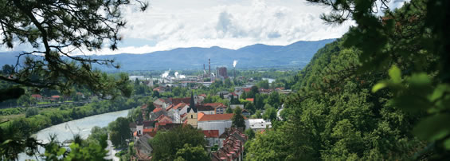

Slovenske občine in njihove krajevne skupnosti

- SEVNICA, 272 km 2 (prebivalcev 17.649)
- Blanca
- Boštanj
- Sevnica
- Studenec
- BREŽICE, 268 km 2 (prebivalcev 24.238)
- Bizeljsko
- Brežice
- Cerklje ob Krki
- KRŠKO, 287 km 2 (prebivalcev 25.600)
- Brestanica
- Koprivnica
- Krško
- Raka